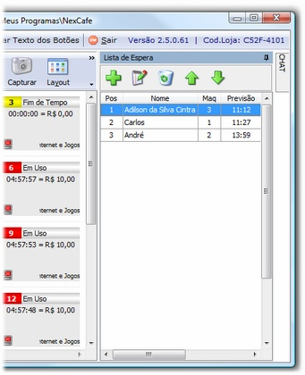
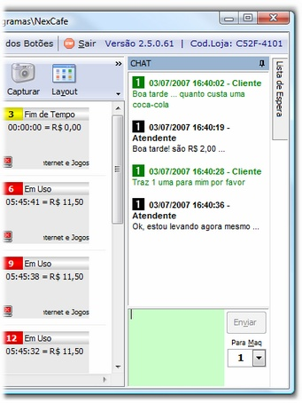
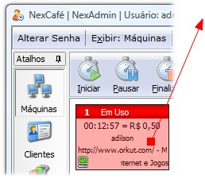
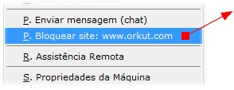
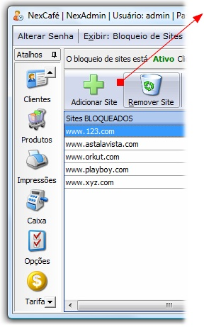
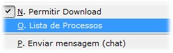
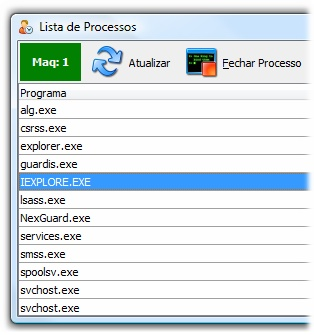
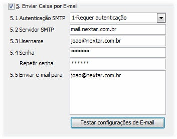
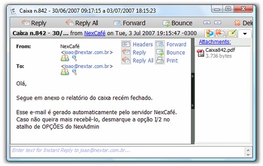
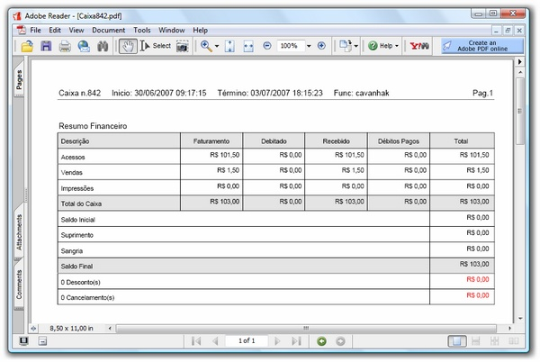

|
Nessa versão alguns recursos muito solicitados por todas lojas foram incluídos: Lista de Espera, Chat, Bloqueio de Sites, Finalização de programas/processos e Envio de caixa por e-mail. Confira abaixo mais detalhes sobre essas novidades:
| 1. | Lista de Espera: Controle automático da lista de pessoas que estão aguardando um PC ser liberado. |

|
A lista de espera fica alinhada por padrão à direita da tela do NexCafé.
| ▪ | Você pode adicionar um novo cliente na lista, Editar para corrigir qualquer informação sobre o cliente / espera, apagar um cliente da lista ou mesmo trocar de posição com outro cliente |
| ▪ | Na lista de espera são exibidos: posição do cliente dentro da lista, a máquina prevista para sua entrada e também o horário provável. |
| ▪ | A lista aceita clientes cadastrados ou clientes avulsos. |
| ▪ | Também é possível reservar a máquina para ser usada por um cartão de tempo específico. |
| ▪ | Uma máquina que está reservada para um cliente, nenhum outro consegue usar (a não ser que o funcionário libere). |
| ▪ | Assista um vídeo tutorial sobre a lista de espera. |
|
| 2. | Chat com Clientes: Permite que o funcionário da loja se comunique com os clientes (e vice-versa) através de uma janela de chat. |

|
A janela de Chat fica alinhada por padrão à direita da tela do NexCafé:
| ▪ | O cliente pode usar o chat para fazer pedidos de produtos, solicitar tempo, tirar dúvidas etc... |
| ▪ | É possível enviar mensagem para todos clientes simultaneamente ou para uma máquina específica. |
| ▪ | Assista um vídeo tutorial sobre o Chat com Clientes. |
|
| 3. | Bloqueio de Sites: Crie uma lista de sites que os clientes não podem visitar ou adicione com o botão direito do mouse o site que o cliente está visitando agora na lista de não permitidos. |

|
1 Monitore o site que o cliente está acessando agora
|

|
2 Clique com o botão direito para bloquear o site
|

|
3 Mantenha uma lista de sites bloqueados
| ▪ | Adicione ou Remova sites a qualquer momento; |
| ▪ | Ative ou Desative o bloqueio. |
| ▪ | Assista um vídeo tutorial sobre o bloqueio de sites. |
|
| 4. | Finalização de processos: O NexAdmin apresenta a lista dos processos (programas) que estão em execução na máquina cliente e você pode encerrar remotamente o item que desejar. |

|
Na lista de máquinas clique com o botão para pedir a Lista de Processos.
|

|
| ▪ | Veja a lista de programas que está em execução na máquina cliente nesse momento. |
| ▪ | Se desejar encerre qualquer programa utilizando o botão "Fechar Processo". |
| ▪ | Assista um vídeo tutorial sobre a finalização de processos. |
|
| 5. | Caixa por E-mail: Receba automaticamente um relatório de caixa por E-mail, toda vez que um caixa for fechado. |

|
Configure
Para ativar esse recurso, entre no atalho Opções e selecione "H. Caixa" para configurar sua conta de E-mail que será usada para o envio.
| ▪ | É necessário que seu provedor de e-mail suporte o protocolo SMTP. Alguns provedores de e-mail via WEB como Hotmail não suportam. |
| ▪ | Digite os parâmetros de conexão nos itens 5.1 a 5.4. |
| ▪ | No item 5.4 coloque o endereço de e-mail onde você quer receber o relatório de caixa. Pode ser quantos e-mails você quiser. |
|

|
Receba o e-mail
Assim que o caixa é fechado o sistema gera um e-mail com um arquivo anexado contendo o relatório.Para ativar esse recurso, entre no atalho Opções e selecione "H. Caixa" para configurar sua conta de E-mail que será usada para o envio.
|
Veja o relatório PDF: O relatório é enviado no formato Adobe Acrobat .PDF.
Assista um vídeo tutorial sobre o envio de caixas por e-mail.

|
|